Home
The Beauty of Baking
Flour, Eggs, Sugar, Baking Powder, Milk, everything involving baking is my favorite. Take a look around and find out why.
What are some things I've baked before?
After years of baking Oatmeal Raisin cookies with my sister, as soon as she moved out, I explored everything such as:
- Cake Pops
- Bread and Rolls
- Cookies
- Birthday Cakes
About Me
Since when have I baked?
My sister is 17 years older than me, so when she would bake cookies on a casual Saturday, I was baking right alongside her. I picked up a whisk at 7 and never stopped after.
My Materials
Over the years I've gotten so many trinkets and decorating tools that I have bits of my baking stuff everywhere. It got to the point where I needed my own shelf in the pantry. My brother got me a stand mixer in 2018 but before that I used a hand mixer (builds the muscle).
When have I baked?
Baby Showers
For both my brother and sisters baby shower, I've helped decorate their table with lots of treats.
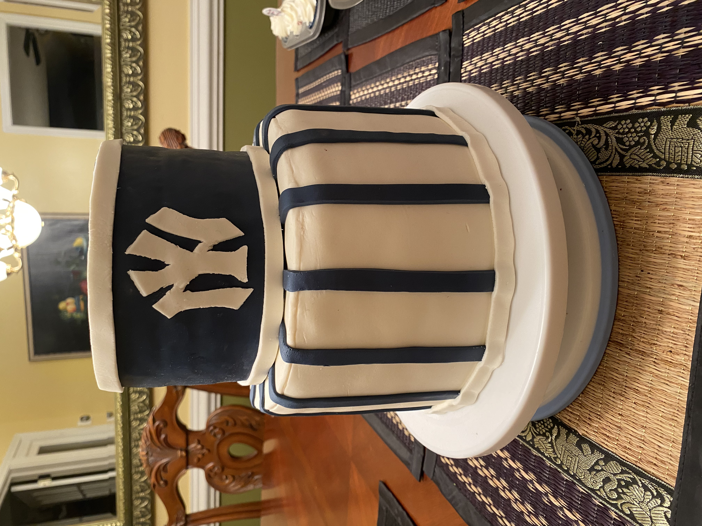 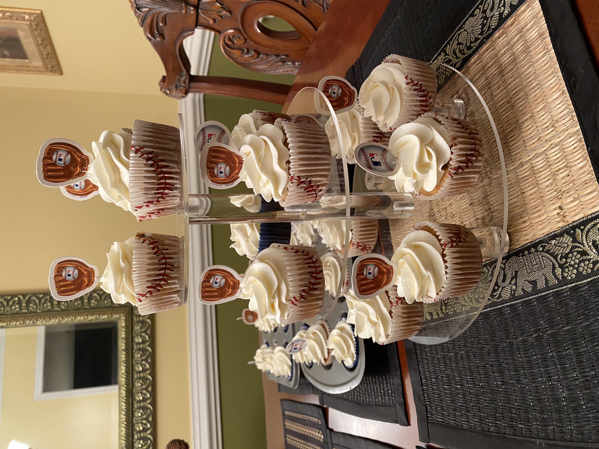The themes were the Yankees and Twinkle Twinkle Little Star.
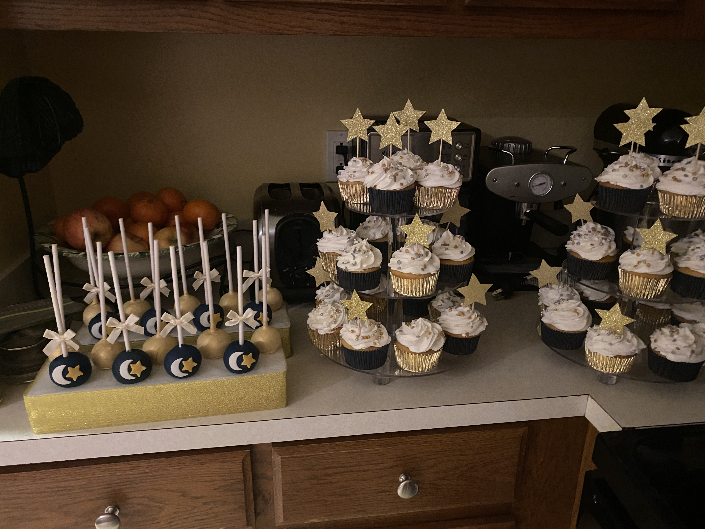 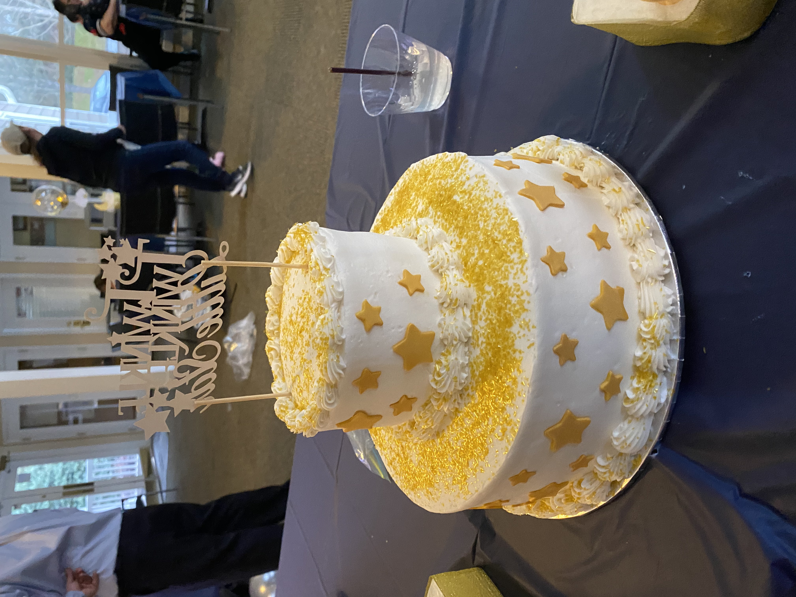Birthdays
For both my close family such as my parents and siblings and outer family like my cousins, I've made cakes and desserts for birthday parties or just for them to feel special.
 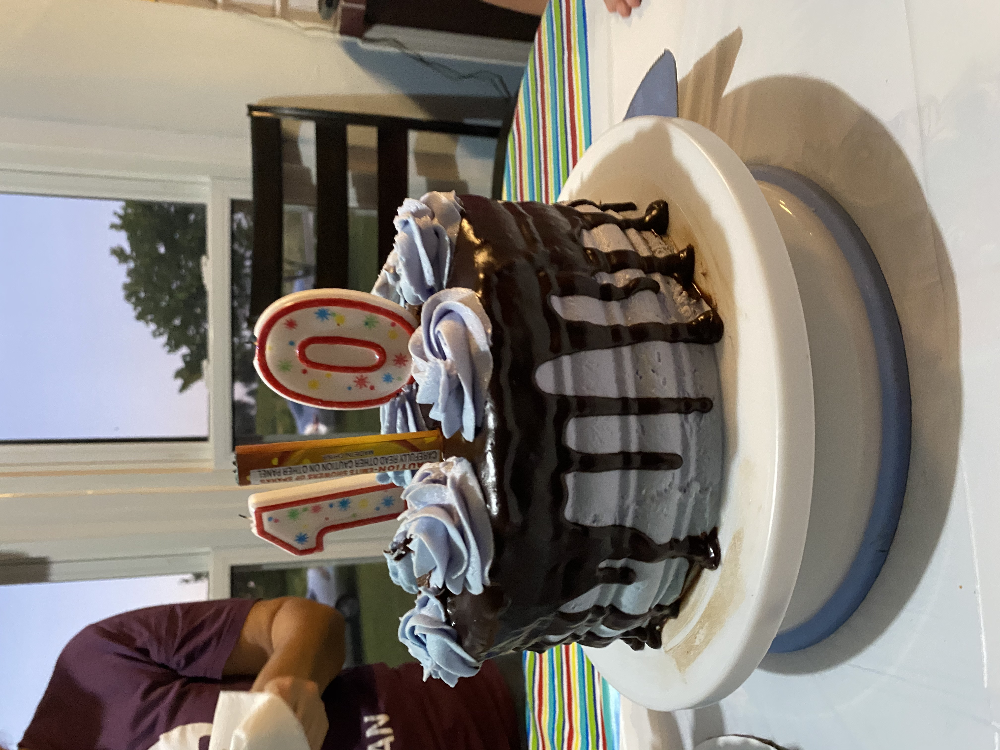
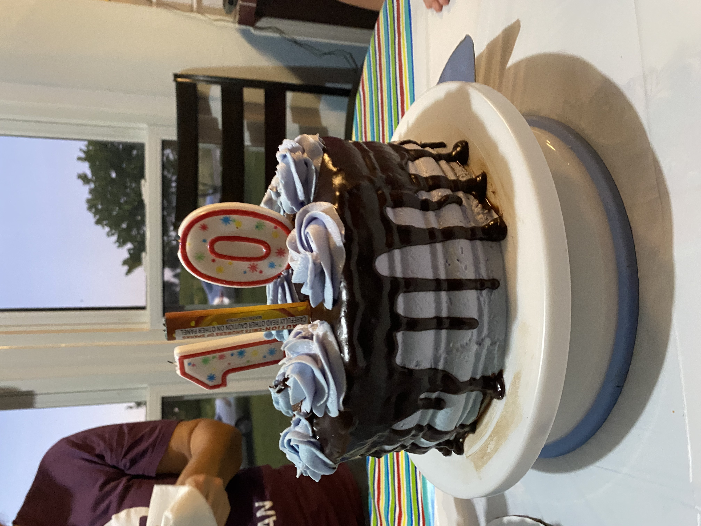
Where have I baked?
My Brothers Old Apartment
My brother had an island in his apartment and I spent hours making cakes and cupcakes for New Years when I was staying with them. It was honestly a lot of fun and felt alot more like a baking show than at my kitchen at home.
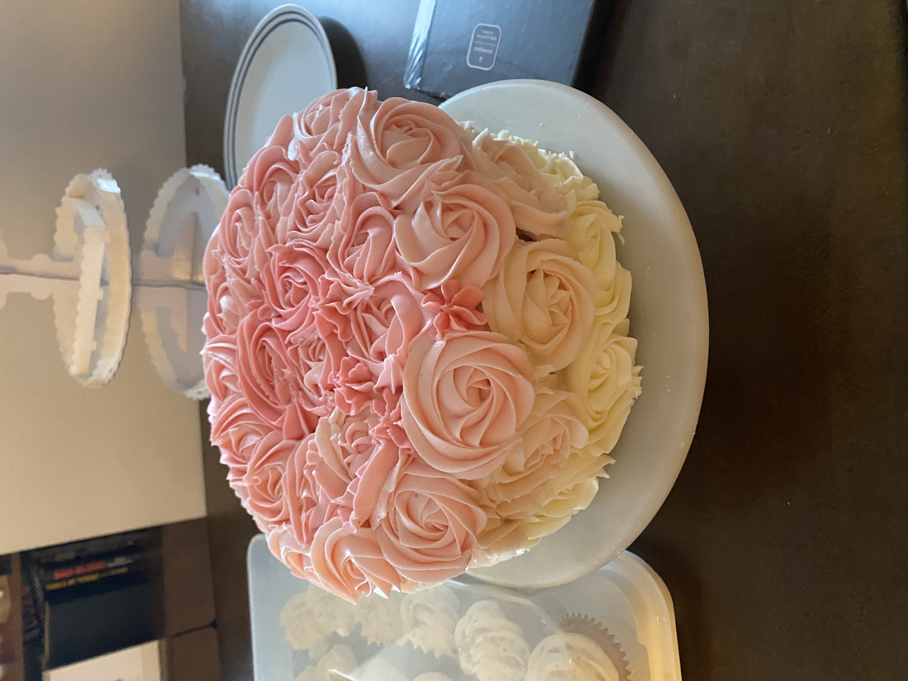 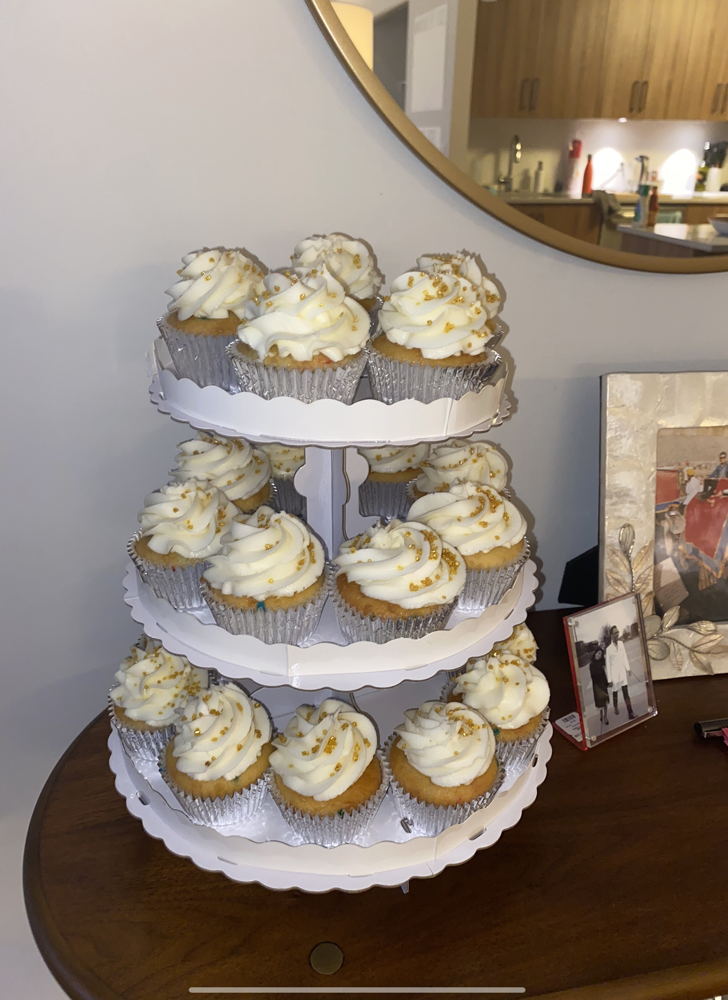My Uncles Tiny Kitchen
I once promised to make my uncle Alfajores, a Peruvian sandwich cookie, and ended up using a glass bottle as a rolling pin and a pizza tray to bake them on.
Why have I baked?
Culture
Both of my grandmas were bakers themselves and made traditional Peruvian desserts, sadly one of them passed away and whenever I bake a batch of Alfajores, I think of her.

Baking Camps
I loved baking so much I wanted to know how it would feel on a baking show, so I tried the next best thing- a summer camp at Johnson & Wales.It was honestly a magical week and I'll never forget it.
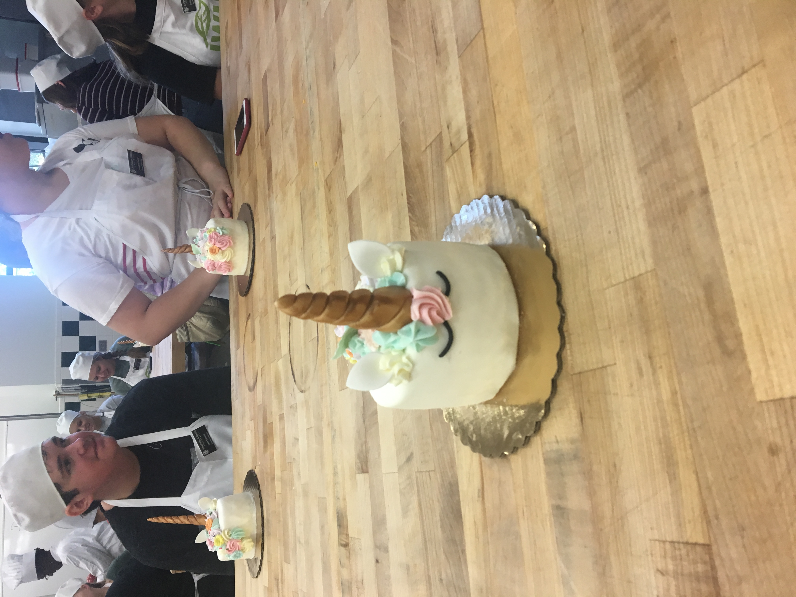 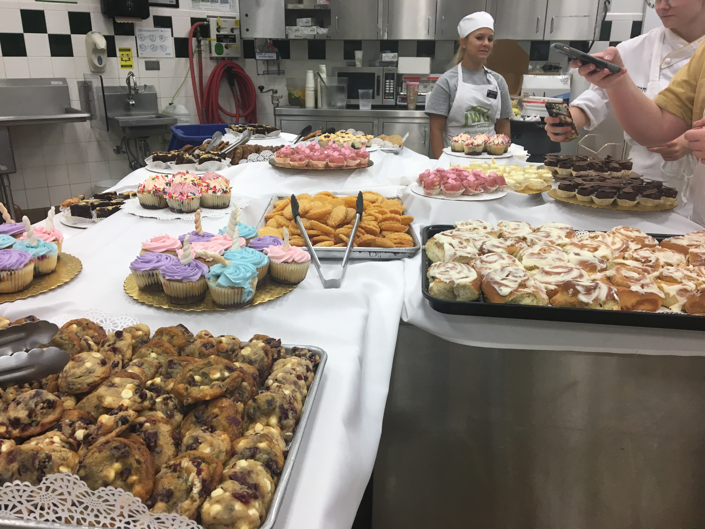 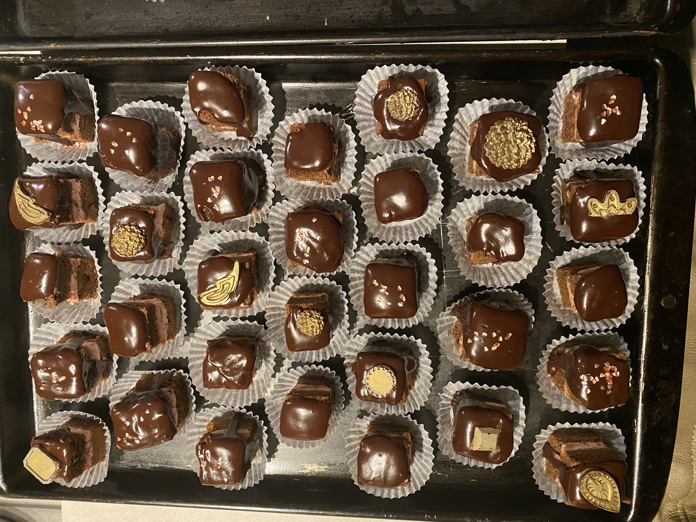How Can You Bake?
With Love!
You can bake with friends, for a project, or even a dogs birthday, theres nothing stopping you! Baking is for everyone, all year round.
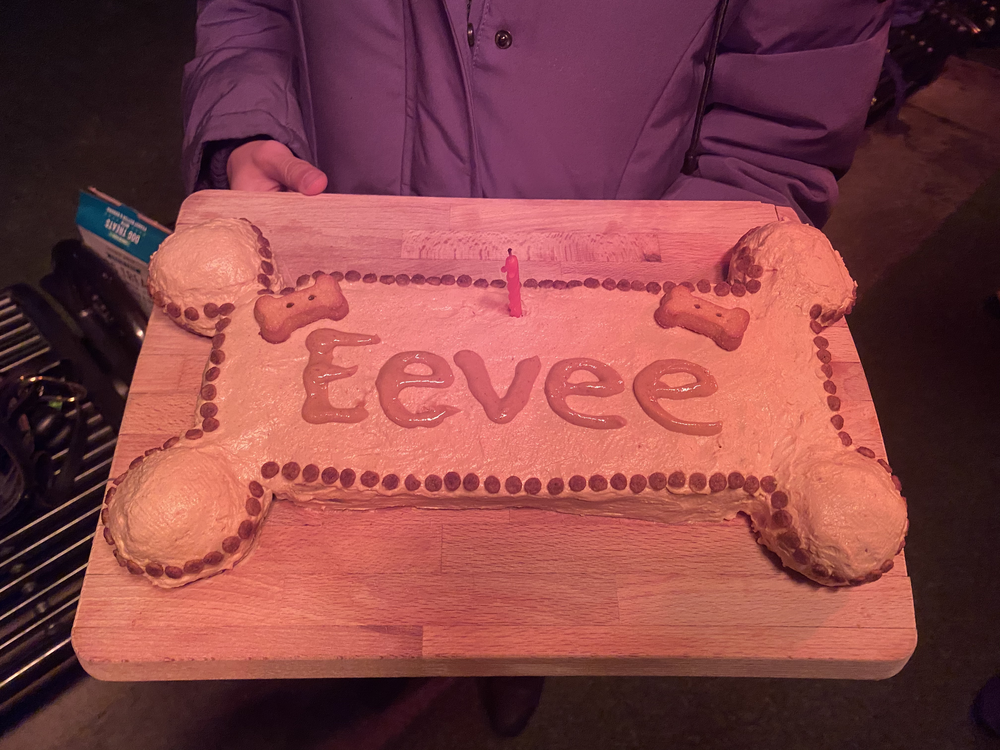As you can tell, from places I've baked, you can bake anywhere with a little motivation. All it takes is a recipe, time, and love.
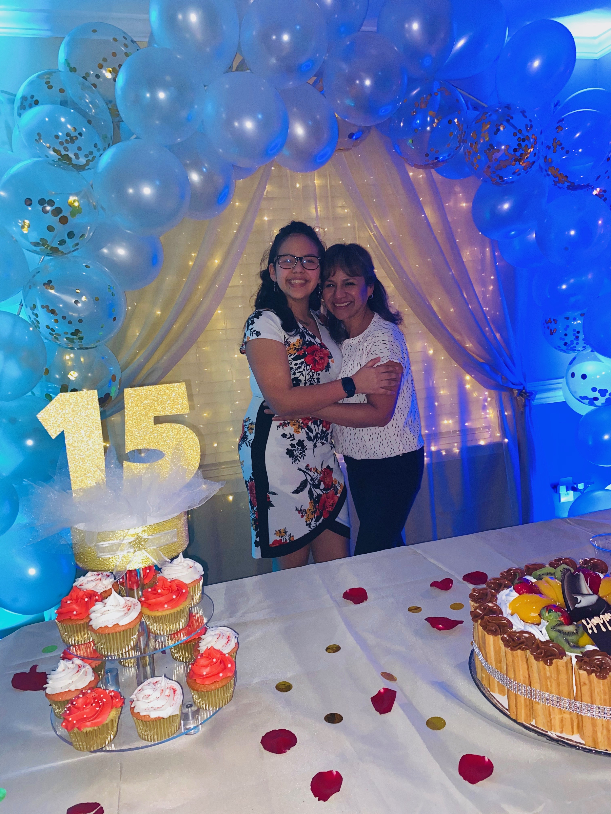Good recipes are hard to find however, heres my favorite choclate chip one!Click Here